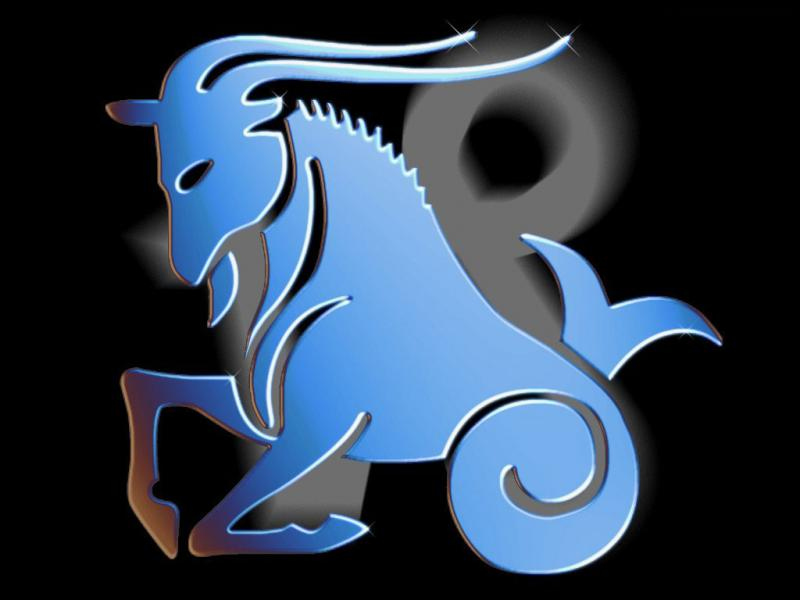
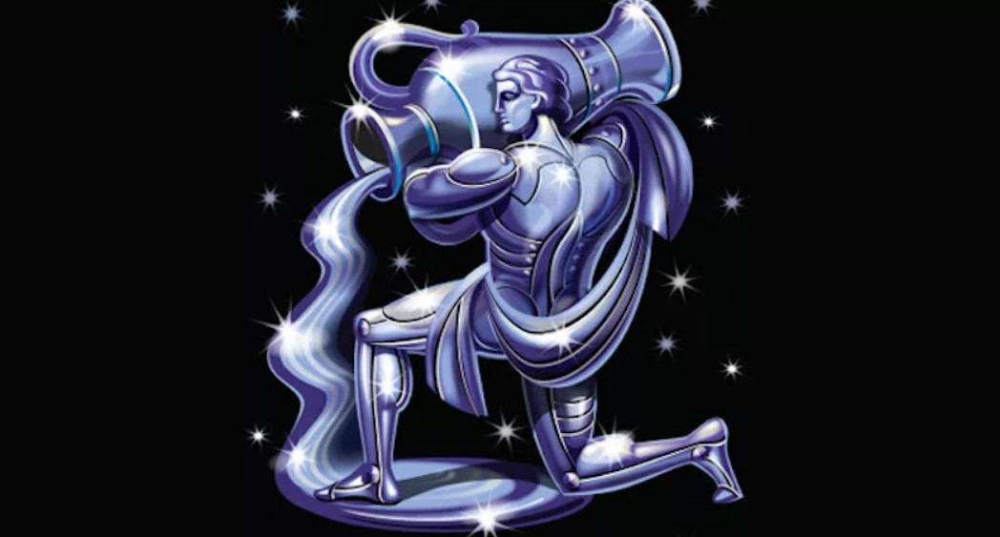
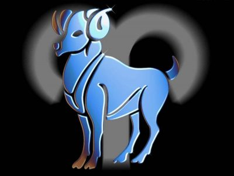
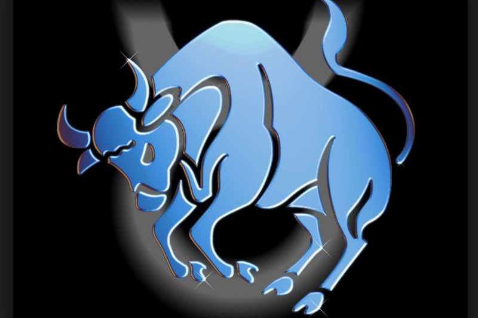
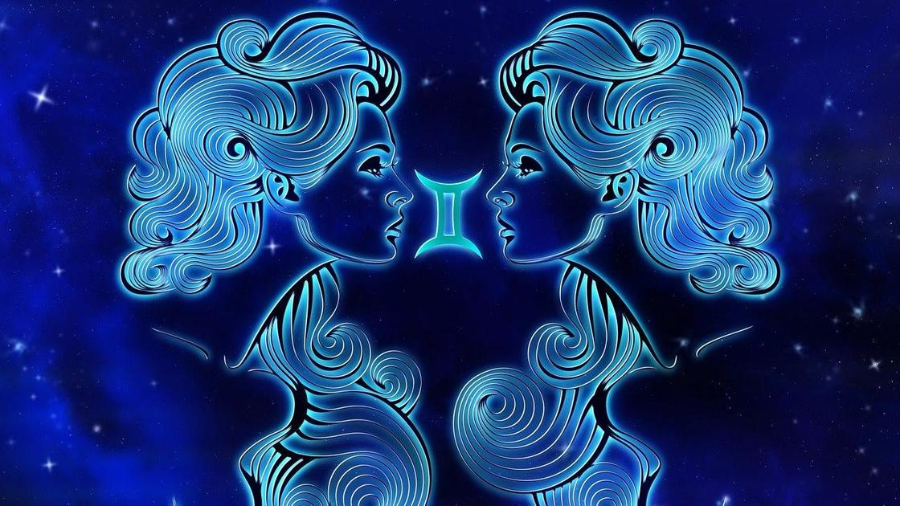

Коротко о главном у каждого знака зодиака
Козерог
Не дай бог подойти к Козерогам за советом: минимум час нотаций тебе обеспечен. Все потому, что они всегда знают, как выйти из любой ситуации (или делают вид, что знают, и будут обстоятельно, нудно и с примерами рассказывать, где же ты ошибаешься и как жить дальше. Максимально отдается работе, потому что сидеть на пятойточке ровно и ничего не делать он просто не умеет. А если приходится – начинает чахнуть. Партнера выбирает не сердцем, а в первую очередь головой, поэтому в семейной жизни неимоверно счастлив.
Водолей
У этих болтунов своя жизнь может идти наперекосяк – с работы уволили, личной жизни нет и не предвидится, да еще и куча комплексов в анамнезе, но тебе они будут давать советы, которые, как ни странно, работают. Обожают часами трепаться обо всем (читай, ни о чем): о политике, теориях заговора и баттле Оксимирона с Гнойным. Причем с абсолютно незнакомыми людьми это тоже срабатывает. Непостоянен, в понедельник может влюбиться (но не сильно), во вторник послать куда подальше, поплакать в среду, уже к пятнице найдет себе новый объект обожания, а про старый даже и не вспомнит. Вообще, Водолею влюбиться очень сложно: он подсознательно чувствует, чем все это закончится.
Рыбы
Те еще мечтатели. В своих фантазиях Рыба уже давно завоевала мир, предотвратила глобальное потепление и искоренила голод на планете, а вот в реальной жизни им неинтересно – все скучно, пресно и вообще недостойно их королевского внимания. Страшные вруны, причем поймать их на лжи почти невозможно. Угрызений совести у них нет,так что раскаиваться и сознаваться они не собираются. И им веришь, глядя в их большие и честные глаза. Обижать их нельзя – страдать будут долго, муторно и с наслаждением. Если в жизни все идет хорошо, у Рыб начинаются маниакальные мысли о грядущем кошмаре, потому что идеально быть не может.
Овен
По-простому, баран. Самые упертые люди в мире. Даже если ты уже доказал им свою правоту и они в нее поверили, все равно будут уверять, что это они в белом пальто, а дебил тут ты. Переспорить невозможно, лучше даже не пытаться, сбереги свои нервные клетки, покивай головой на его ахинею и отойди в сторонку. Ненавидят конкуренцию: если кто-то в окружении Овна будет в чем-то лучше него, то тот костьми ляжет, но сделает так, чтобы утереть противнику нос.
Телец
Абсолютно уверены, что они – особенные, знают все лучше всех и просто обязаны объяснить тебе, почему ты не прав и в каких именно аспектах. Главное отличие от Овнов – они умеют признавать свою неправоту. Потом даже благодарить тебя будут, что ты раскрыл им глаза на правду. Однолюб и очень доверчив, поэтому часто обманывается в людях и еще чаще в них разочаровывается.
Близнецы
Заставить Близнеца замолчать невозможно. Трындеть до потери пульса – это их тайное оружие. Поэтому очень хорошо сходится с Водолеями – запри их в одной комнате на ночь, к утру станут лучшими друзьями и будут планировать захват мира и государственный переворот. Несмотря на свою болтливость, люди рассудительные и крайне логичные – в их мире все разложено по полочкам, а любое вмешательство извне резко пресекается. Они сами знают как нужно. Хотя от дружеских советов не отказываются.